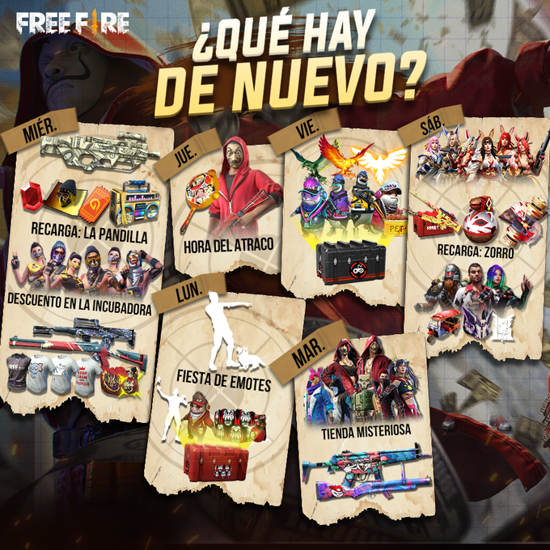

Os detallamos todos los eventos y desafíos que tendrán lugar en Free Fire esta semana del 9 al 15 de septiembre en dispositivos móviles iOS y Android.
Free Fire es otro de los títulos que está triunfando en gran medida últimamente. Después de conocer su colaboración con La Casa de Papel (serie de Netflix), desde Garena han compartido un calendario en el que detallan todos los desafíos, eventos y promociones que tendrán lugar en el juego, tanto en dispositivos móviles iOS como en Android. A continuación os los dejamos detallados para que los podáis consultar de forma sencilla y directa. Por otro lado, recordamos que podéis conseguir descargar Free Fire gratis sin demasiada complicación.
Agenda semanal de Free Fire: eventos y desafíos“El Plan Bermuda llega con todo a los campos de batalla de Free Fire. No te pierdas ninguna misión para obtener todos los objetos especiales de nuestra colaboración con La Casa de Papel”, detallan desde la cuenta oficial del juego, a través de Twitter. Gracias a este tweet podemos conocer cómo queda la semana:

Por otro lado, recordamos que el Plan Bermuda estará disponible a partir del día 20 de este mismo mes de septiembre. Este evento ofrecerá nuevas skins basadas en La Casa de Papel, tales como el clásico mono rojo de la serie original de Netflix, así como dos skins exclusivas inspiradas en la colaboración de Free Fire con el show televisivo: el Plan Bermuda Shinobi y Kunoichi y el Plan Bermuda Street.